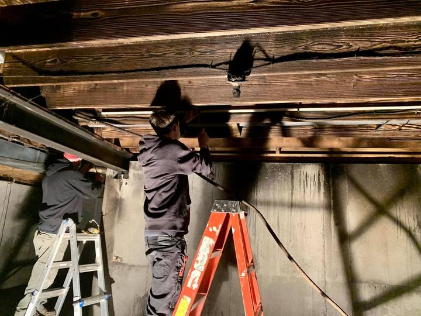

0'to 1'
01
Plumbing repair & service
Leaks, failed fittings, low pressure, a line that has given up. Diagnose the real problem first, then repair or replace what needs it, inside the walls, under the floor or down in the basement.
